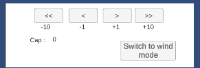
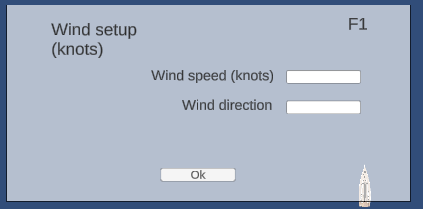
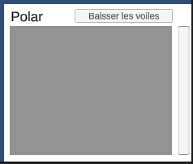

Getting Started -Navigation Scene
User keys
TAB: action: change between heading mode and pace mode (but pace not functional).
F1: action:
- opens the wind configuration window.
- closes the wind configuration window.
F2: share:
- opens the wave configuration window.
- closes the wave configuration window.
F3: action:
- opens the current configuration window.
- closes the current configuration window.
User inputs
Cap Heading Buttons:
Location: middle bottom of screen
Action: change cap (-10, -1, +1, +10)
Switch button : swap between heading and wind mode.

"Set factor of acceleration" field:
Location: bottom left. Action: changes the acceleration factor by the value entered in the associated field. (by default this is 1)

Environment configuration field:
Action: after pressing the "ok" button, changes the environment by the values entered in the associated fields. (are at 0 by default)

Change of polar:
Location: bottom right.
Action: Allows a change of polar following its selection by a user click (the active polar is in green).
You can also lower the sails by clicking on the corresponding button.

Menu banner
Location: top left Features:
- Navigation: Exit: allows you to quit the application.
- Save: allows you to display a panel to save your race by a name chosen by the user in an associated field.
- Environment: displays the associated configuration windows.
- Help: Documentation, opens the user and developer documentation web page.